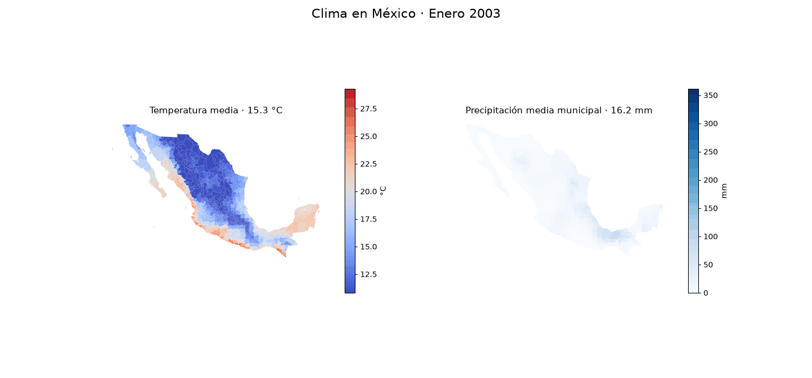
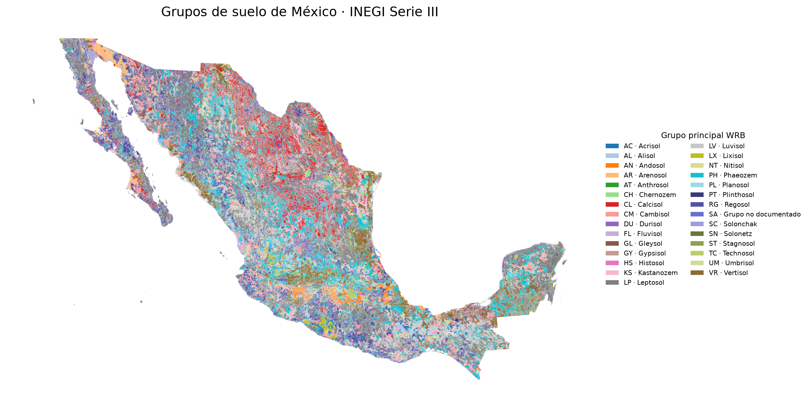
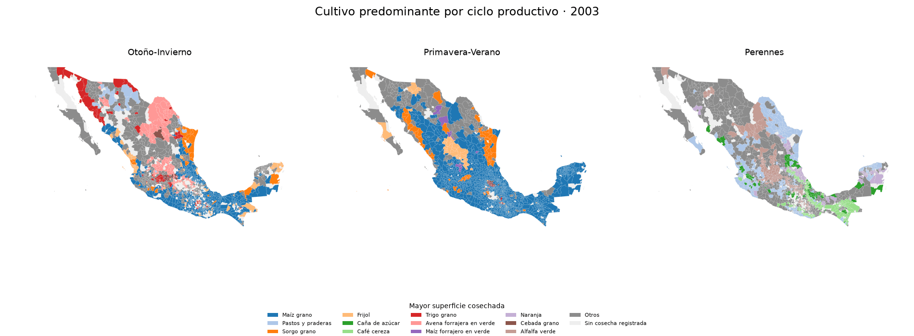
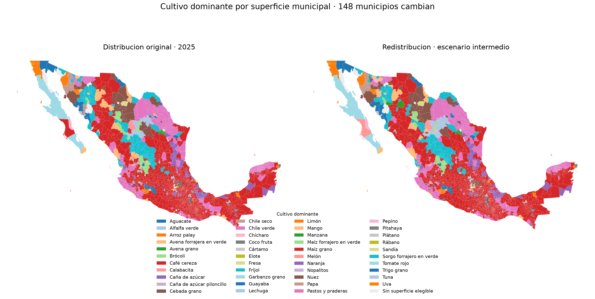

México · 2003—2025
¿Y si cultiváramos cada producto donde tiene mejores condiciones?
Una historia construida con producción agrícola, clima de NASA POWER y suelos de INEGI para explorar una redistribución territorial responsable.
Comenzar la historia ↓Proyecto de Ciencia de Datos · Fuentes: DGSIAP, NASA POWER e INEGI
01 · La base
Veintitrés años para leer el territorio
Integramos agricultura, clima mensual y características dominantes del suelo a escala municipal.
Producción DGSIAP+Clima NASA+Suelo INEGI→Municipio · cultivo · año
02 · El clima se mueve
La temperatura y la lluvia no respetan fronteras agrícolas
El recorrido mensual revela sequías, temporadas húmedas y contrastes regionales que una media anual escondería.
Temperatura Precipitación

03 · El suelo permanece
Debajo de cada cosecha hay una geografía distinta
Los grupos de suelo cambian en textura, profundidad y limitaciones. Esa diversidad condiciona qué cultivos pueden sostenerse, aun bajo un clima favorable.
INEGI Serie IIIGrupos principales WRB a escala 1:250,000

04 · La pregunta
Producir mucho en un lugar puede venir de la tradición, del manejo… o de una combinación favorable de clima y suelo.
Clima
Temperatura y precipitación alineadas con cada ciclo productivo.
Suelo
Grupo dominante, textura y fases físicas y químicas.
Experiencia
Persistencia histórica, modalidad y desempeño no explicado.
05 · Presencia y estabilidad
La tradición productiva también deja una huella territorial
Selecciona un cultivo para observar dónde mantiene presencia histórica y qué tan variable ha sido su rendimiento municipal.
06 · Aprender sin memorizar
Modelos que viajan en el tiempo y en el espacio
Entrenamos con años anteriores y reservamos municipios completos para saber si el patrón se sostiene fuera de los lugares conocidos.
2003—2021
entrenamiento→2022—2025
prueba temporal+municipios nuevos
prueba espacial
entrenamiento→2022—2025
prueba temporal+municipios nuevos
prueba espacial
89
cultivos con modelo entrenado
22superan R² espacial de 0.50
Solo éstos entran al escenario de redistribución.
07 · Cada ciclo dibuja otro México agrícola
Redistribuir también exige respetar cuándo se cultiva
La presencia territorial cambia entre Otoño–Invierno, Primavera–Verano y Perennes. Por eso el intercambio se calcula dentro de cada ciclo y modalidad, no sobre una sola fotografía nacional.
Misma superficiepor municipio · ciclo · modalidad


08 · Cambiar dónde, no cuánto
Una redistribución por intercambios
Se conserva la superficie municipal y la superficie nacional de cada cultivo. El escenario intermedio mueve solo una fracción de la distribución observada.
104municipios cambian de cultivo dominante

09 · El potencial
Más producción esperada, sin crear tierra nueva
La ganancia es una estimación del modelo bajo condiciones recientes, no una promesa de cosecha.
Conservador
+2.34%+1.37 Mt
Intermedio
+5.84%+3.42 Mt
Exploratorio
+9.34%+5.48 Mt
Línea base modelada: 58.66 millones de toneladas
10 · La lectura responsable
Un mapa de oportunidades, no una orden de reconversión
La evidencia permite preguntar mejor dónde explorar. La decisión real pertenece a productores, comunidades y políticas públicas.
Todavía falta incorporar
- Disponibilidad y costo del agua
- Rentabilidad, demanda y logística
- Rotaciones, perennes e infraestructura
- Incertidumbre climática futura
- Conocimiento local de productores